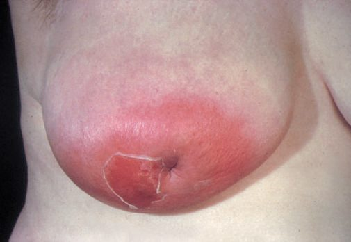
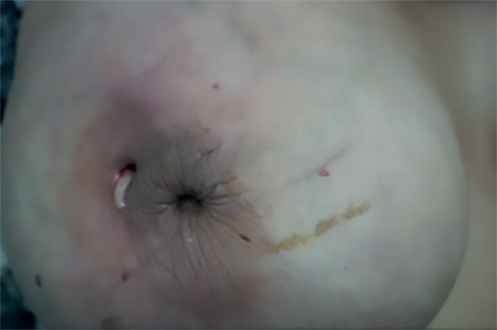
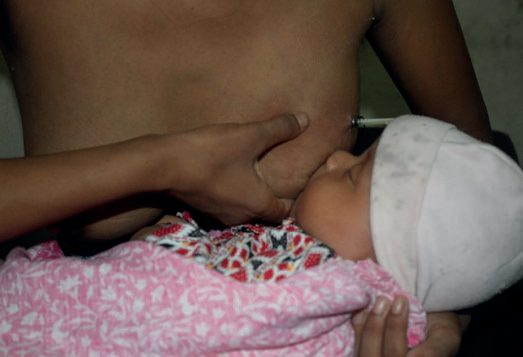
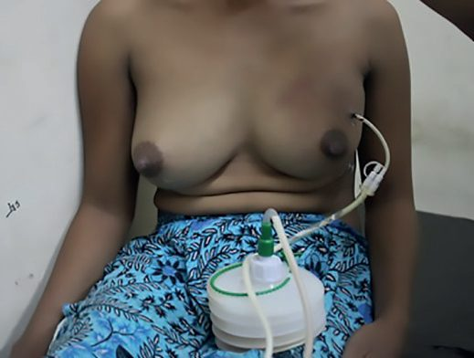

Mastitis and Breast Abscess
Summary
- Mastitis refers to inflammation of the breast tissue that may or may not be accompanied by infection, and it can occur in both lactating and non-lactating women, the former being more common [1].
- Acute infection is usually caused by Staphylococcus aureus and, if untreated, progresses from cellulitis to suppuration and abscess formation [1].
- Two broad categories exist: lactational infections arising from bacterial entry through the nipple into the duct system, and chronic subareolar infections associated with duct ectasia/periductal mastitis in non-lactating women [2].
- Ultrasound-guided aspiration is now the preferred first-line treatment for a confirmed abscess in most cases, with surgical incision and drainage reserved for those that fail conservative measures [1][2].
Definition
- Mastitis is inflammation of the breast tissue that may or may not be accompanied by infection [1].
- Lactational (puerperal) mastitis occurs in breastfeeding mothers, whereas non-lactational mastitis is inflammation of the breast tissue in a nulliparous woman or occurring at least 6 months after cessation of lactation, and includes periductal mastitis, idiopathic granulomatous mastitis (IGM) and tubercular mastitis [1].
- Duct ectasia and periductal mastitis are described as a common condition of unknown aetiology, characterised pathologically by dilatation of the larger mammary ducts filled with inspissated material containing macrophages and chronic inflammatory debris, with inflammatory complications closely related to smoking [3].
- Periductal mastitis is also termed mammary duct ectasia or plasma cell mastitis [4].
Pathophysiology
- Bacteria may enter the nipple through a cracked or retracted nipple; in many cases the lactiferous ducts become blocked by epithelial debris, leading to stasis followed by infection, and once within the ampulla of the duct, staphylococci cause clotting of the milk and then multiply within the clot [1].
- Abscess formation is most commonly seen at two stages during lactation: in the first month after childbirth owing to inexperience or inadequate breastfeeding, and at weaning owing to engorgement and trauma to the nipple by the baby's teeth [1].
- Lactational infections are thought to arise from entry of bacteria through the nipple into the duct system [2].
- Periductal mastitis is a chronic non-lactational inflammation around the major milk ducts whose pathogenesis is obscure and thought to be autoimmune in nature, and it is much more common in smokers; it may progress to a subareolar inflammatory mass that suppurates, and because thick areolar muscles do not allow the abscess to perforate through the areola, pus follows the path of least resistance, rupturing at the areolar edge to form a mammary or milk duct fistula [1].
- In non-lactating women, this chronic relapsing subareolar infection is associated with duct ectasia, appears related to smoking and diabetes, and the infections are most often mixed, including aerobic and anaerobic skin flora; repeated infection with resulting inflammatory changes and scarring may lead to nipple retraction/inversion, subareolar masses, and occasionally a chronic fistula from the subareolar ducts to the periareolar skin [2].
Clinical features
- Initially there is generalised cellulitis, which if untreated progresses to suppuration and abscess formation; an abscess presents as a fluctuant lump (fluctuation may be absent if deep-seated) with pain, signs of inflammation, fever, malaise and difficulty feeding, and may be associated with enlarged tender axillary nodes [1].
- The infected breast will be red, warm, painful and swollen, and the abscess will eventually point and discharge through the skin, with obvious tender ipsilateral axillary lymphadenopathy possible [3].
- It is safe for the infant to continue breastfeeding even from the breast containing an abscess, providing the mother can tolerate the process [3].
- Periductal mastitis presents with central non-cyclical pain, pus discharge from the nipple and a subareolar tender mass/abscess or mammary duct fistula, with examination revealing a tender firm subareolar lump or abscess, purulent nipple discharge, thickened tender major milk ducts, and a transverse slit-like nipple retraction resembling a fish's mouth [1].
- Duct ectasia/periductal mastitis presents with nipple inversion with a characteristic transverse slit appearance, purulent nipple discharge from dilated ducts, and chronic low-grade periareolar infection with tender thickening that may progress to abscess and fistula formation, typically causing a small scabbed area at the areolar margin that intermittently discharges pus [3].
- Lactational mastitis presents with recurrent intermittent breast pain, swelling, tenderness and seropurulent nipple discharge, while breast abscess presents as acute, severe, localised breast pain with swelling, redness and sometimes purulent nipple discharge, commonest in breastfeeding women [5].
- Peau d'orange (skin edema) is a hallmark not only of inflammatory carcinoma but also of acute mastitis [2].
- Periductal mastitis symptoms include noncyclical mastodynia, erythema, nipple retraction and creamy nipple discharge, and can present with a sterile or infected subareolar abscess [4].

Etiology
- Most cases of lactational mastitis are caused by S. aureus and, if hospital-acquired, may be due to methicillin-resistant S. aureus [1].
- Infections of the breast are most often caused by Staphylococcus aureus or streptococcal species [2]; Staphylococcus aureus and Streptococcus species are the organisms most frequently recovered from nipple discharge of an infected breast [6].
- Infectious mastitis is most commonly associated with breastfeeding, with S. aureus the most common organism, streptococcus also implicated, and smoking a risk factor; lactational mastitis arises from blockage of lactiferous ducts, while nonlactational mastitis can be due to chronic inflammatory diseases (e.g. actinomyces) or autoimmune disease (e.g.
- SLE) [4].
- Non-lactational mastitis is associated with smoking and due to mixed bacterial growth [7].
- Periductal mastitis risk factors include smoking and nipple piercings, and it usually occurs in peri- or postmenopausal women [4].
- The most common organisms isolated from periductal mastitis/subareolar abscess are staphylococci, enterococci, anaerobic streptococci, and sometimes Bacteroides and mycobacteria [1].
- Mastitis of infants is uncommon and predominantly caused by Staphylococcus aureus [1].
- Idiopathic granulomatous mastitis (IGM) is of unknown aetiology, occurring most commonly in young parous women within the first few years after pregnancy, with an association between IGM and Corynebacterium kroppenstedtii infection postulated [1]; IGM is more common in Hispanic, Middle Eastern, and Southeast Asian populations [2].

Diagnosis
- Ultrasonography reveals cellulitis (an area of increased echogenicity) and liquefaction necrosis (pus as a hypoechoic collection with floating debris that changes with posture) [1].
- US evaluation can assist in characterising a breast abscess and help guide needle aspiration [2].
- Ultrasound may help identify breast abscess if the breast is acutely inflamed, and imaging is rarely necessary otherwise; mammography should be avoided due to the breast compression required and pain [5][7].
- In periductal mastitis, ultrasonography shows thickened major milk ducts with surrounding inflammation or abscess, and a lump should be biopsied under ultrasound guidance to confirm diagnosis; pus discharge should be sent for culture and sensitivity and for GeneXpert MTB/RIF testing to rule out tuberculosis [1].
- All breast infections should be followed up to ensure complete resolution and exclude inflammatory breast cancer, which may present similarly [7].
- Nonlactational breast abscess is considered breast cancer until proven otherwise, requiring incision/drainage with antibiotics, and skin and abscess cavity biopsies for pathology plus fluid for cytology; failure to resolve after 2 weeks or recurrence requires excisional biopsy including skin to rule out necrotic breast carcinoma [4].
- A needle biopsy of a solid mass establishes the diagnosis of IGM, with tissue/aspirate sent for Gram stain and culture, acid-fast bacilli stain and culture, and fungal stain and culture; histologically IGM shows a non-caseating granuloma with chronic inflammation [1].
Scoring and Severity
Not covered in source textbooks.
Treatment and Management
- During the cellulitic stage, patients should be treated with anti-staphylococcal antibiotics such as cloxacillin, flucloxacillin or erythromycin; breastfeeding from both breasts should be encouraged 2-hourly followed by emptying the breast, and a breast support garment, cold compression and analgesia aid symptomatic relief [1].
- Contrary to the practice of incision and drainage, ultrasound-guided drainage of a breast abscess gives an excellent cosmetic result, does not hamper breastfeeding, and can be done as a day-care procedure with a high success rate; incision and drainage may result in a non-healing milk fistula [1].
- Antibiotics should be continued for 14 days, and the catheter (if used) irrigated with cold normal saline until complete resolution [1].
- Treatment of lactational mastitis includes advising continued feeding/expressing and antibiotics such as flucloxacillin, affecting 5% of breastfeeding women, usually due to staphylococcal infection [7].
- Non-lactational mastitis is treated with antibiotics covering anaerobic bacteria and Gram-negative bacilli, e.g. amoxicillin plus metronidazole [7].
- Lactational infectious mastitis is treated with antibiotics alone (continuing breastfeeding) for 2 weeks, and nonlactational mastitis with antibiotics for 2 weeks; failure to resolve after 2 weeks or recurrence requires excisional biopsy including skin to rule out necrotic breast cancer [4].
- Lactational breast abscess treatment is percutaneous drainage, antibiotics, and continued breastfeeding, with incision and drainage reserved if it does not resolve promptly [4].
- Treatment for breast infections requires antibiotics (depending on risk for MRSA colonisation) and regular emptying of the breast; true abscesses require drainage, with initial attempts at needle aspiration and surgical incision and drainage reserved for abscesses that do not resolve after aspiration and antibiotic treatment [2].
- Subareolar infections may initially manifest as subareolar pain and mild erythema, treatable with warm soaks and oral antibiotics covering aerobic and anaerobic organisms; if an abscess develops, needle aspiration is required in addition to antibiotics, with surgical incision and drainage reserved for abscesses that do not resolve with conservative measures [2].
- Previously almost all breast abscesses were treated by operative incision and drainage, but now the initial approach is antibiotics and repeated aspiration of the abscess, usually ultrasound-guided [6].
- Many cases of periductal mastitis resolve with a course of antibiotics combined with needle aspiration of an abscess [1].
- If lactational breast abscess, treatment is oral antibiotics (including flucloxacillin 500 mg tds) and aspirational drainage, often repeated several times on a daily or alternate-day basis; if associated with chronic mastitis, oral antibiotics include metronidazole 400 mg tds or co-amoxiclav 750 mg tds [5].
- Breast abscesses may be effectively aspirated for relief of pressure symptoms under local anaesthetic, and formal incision and drainage is often avoided, especially in lactational abscesses [5].
- Breast abscess can be treated by needle aspiration under ultrasound guidance, or mini-incision and drainage only if aspiration fails or overlying skin is necrotic [7].
- Some small breast abscesses can be managed by simple needle aspiration of the pus and antibiotic therapy [8].
- In IGM, symptomatic patients and those with infection are treated with non-steroidal anti-inflammatory drugs and antibiotics with or without drainage; anti-tuberculous therapy should only be given to patients with evidence of TB, and in persistent or progressive cases, prednisolone (oral or topical) with or without methotrexate has helped in regression [1].
- Antibiotic treatment for IGM directed against Corynebacterium species, doxycycline, clindamycin, azithromycin, or levofloxacin, or culture-driven, is a possible first-line treatment; systemic steroids are an additional avenue, with methotrexate for those unable to tolerate steroids, and intralesional steroid injections have shown promising results; surgical management of IGM is not recommended because it might result in an open, poorly healing wound [2].
- Tubercular mastitis is treated with anti-tuberculous chemotherapy for 6–9 months [1].

Surgeries
- Ultrasound-guided drainage is preferred over incision and drainage for a breast abscess, giving an excellent cosmetic result and not hampering breastfeeding [1].
- In abscesses greater than 3 cm in diameter or containing more than 30 mL of pus (on ultrasonography), a vacuum suction catheter is inserted under ultrasound guidance to drain the pus; the patient is reviewed on alternate days by clinical examination and ultrasonography, with any residual collection aspirated [1].
- Surgical treatment by major milk duct excision (excising a 1.5- to 2-cm length of the ductal cone) is needed in patients with periductal mastitis presenting with a subareolar abscess or sepsis and a mammary duct fistula, and smoking cessation must be encouraged to prevent recurrence [1].
- Excision of chronic abscess cavities is performed in patients with recurrent IGM, and major milk duct excision is indicated in patients with a mammary duct fistula [1].
- Repeated subareolar infections are treated by excision of the entire subareolar duct complex after the acute infection has resolved completely, together with intravenous antibiotic coverage; rarely, patients have recurrent infections requiring excision of the nipple and areola [2].
- Surgical incision and drainage should be reserved for abscesses that do not resolve after needle aspiration and antibiotics, and such abscesses are generally multiloculated [2].

Complications
- Incision and drainage may result in a non-healing milk fistula [1].
- Complication of incision and drainage for lactational breast abscess includes milk fistula [4].
- Periductal mastitis may progress to a subareolar inflammatory mass that suppurates, with pus rupturing at the areolar edge to form a mammary or milk duct fistula [1].
- A series of infections with resulting inflammatory changes and scarring may lead to retraction or inversion of the nipple, masses in the subareolar area, and occasionally a chronic fistula from the subareolar ducts to the periareolar skin, which may make surveillance for breast cancer more challenging [2].
- Recurrent and chronic breast abscess is usually associated with duct ectasia, and both duct ectasia and tuberculosis of the breast may present with a painless mass mimicking carcinoma [3].
- An antibioma (a hard, oedematous swelling containing sterile pus) may form following treatment of an abscess with long-term antibiotics rather than incision and drainage [9].
Prognosis
Not covered in source textbooks.
References
- Bailey & Love's Short Practice of Surgery, 28th ed., Ch. 58 The breast
- Sabiston Textbook of Surgery, 22nd ed., Ch. 68 Diseases of the Breast
- Browse's Introduction to the Symptoms and Signs of Surgical Disease, 6th ed., The breast
- The ABSITE Review, 2022, Benign Breast Disease
- Oxford Handbook of Clinical Surgery, 5th ed., Emergency surgery topics
- Schwartz's Principles of Surgery: ABSITE and Board Review, Ch. 17 Breast
- Oxford Handbook of Clinical Surgery, 5th ed., Benign breast disease
- Bailey & Love's Short Practice of Surgery, 28th ed., Ch. 5 Surgical infection
- Oxford Handbook of Clinical Surgery, 5th ed., Glossary